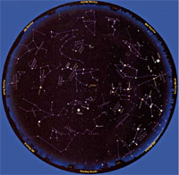

Late March: 10 p.m. (Daylight Saving Time)
The Big Dipper floats high in the northeast these early spring evenings. Bright Jupiter shines high in the south, while brilliant Venus and faint little Mars are lower in the west. These are just a few of the celestial sights you can find on any clear evening in the last half of March and all of April using this sky map. Here's how:
Check the times and dates at the top of the page. Take the map out under the night sky within an hour or so of the right time, and bring along a flashlight to read it by. It helps to rubber-band a piece of red paper over the front of the flashlight; the dim red light won't spoil your night vision.
Outside, you need to know which direction you're facing. (Just note where the Sun sets; that's west.) Hold the map out in front of you, and look at the yellow labels around the edge. Turn the map around so the yellow label for the direction you're facing is right side up.
The curved edge is the horizon. The stars above it on the map match the stars in front of you. The farther up from the map's edge they appear, the higher they'll be in the sky.
The center of the map is the zenith (straight overhead). So a star halfway from the edge of the map to the center will appear halfway from straight ahead to straight up. Ignore all the parts of the map above horizons you're not facing.
Let's give it a try! Turn the map around and hold it so its northeast horizon (labeled "Facing NE") is right side up. High above there, nearly to the center, is the Big Dipper in the constellation Ursa Major. Go out at the right time, face northeast and look high - and there's the Dipper, with its handle to the lower right and its bowl to the upper left just as you see it on the map.
A couple of tips: Look for the brightest stars and constellations first; light pollution or moonlight may wash out the fainter ones. And remember that star patterns in the sky will look a lot bigger than they do here on paper.
Another tip: Planets move with respect to the stars. Jupiter. Saturn, Venus and Mars are drawn at their positions for April 1. Jupiter and Saturn won't move much, but don't be surprised if Venus and Mars look lower before April 1 and higher later.
With this map, you can identify celestial sights all over the sky. Go out the next clear night and make some starry friends!
You can customize a night sky map for your location at SkyandTelescope.com .
Mother Earth News
|
 |
|
|